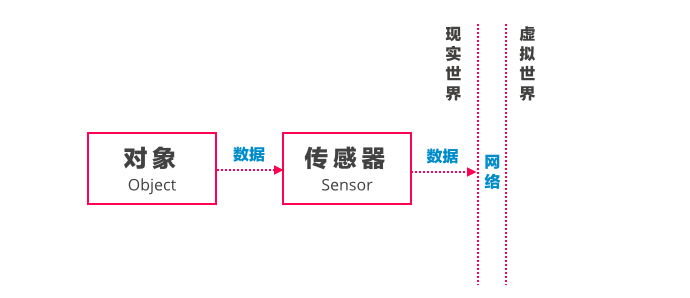

设计一个更好的IoT网络或产品需要了解IoT技术的基础模式，这些模式帮助我们了解数据在各个组件中如何传递、以及现实世界和虚拟世界如何交互。IoT系统的复杂度也是逐渐增长的，同时也需要不同设备（包括不具备计算能力的设备）进行辅助。本文将讨论IoT技术中最基础的5种设计模式。
跟踪
物联网的技术核心是尝试在物理世界中建立一套完整的信息系统，一个最简单的信息系统中包含：
- 对象（Object）
- 传感器（Sensor）
- 数据（Data）
- 网络（Network）

在这个最基础的信息系统中，物理环境中某个对象的特定数据被传感器接收并传输到虚拟世界中，这就是物联网最基础的应用场景：
处于系统内的所有对象（人、环境、物体、设备等）的行为数据被完全电子化记录，主动发送给虚拟世界。
最广泛使用的RFID贴片（Radio Frequency Identification Tag）就是典型的「跟踪」型模式，RFID贴片作为传感器附着在物体上，当标签进入磁场后，标签根据磁场射频信号产生的电流能量发送储存在芯片中的产品信息，上传至网络。
服装零售店面中的环境因为消费者不可估计的行为而变得特别复杂，因此RFID贴片特别适用于服装零售店面的商品管理（参考），梅西百货从2009年开始在其店面中实验RFID，目前已经部署超过850家，以替代其传统的肉眼识别和扫码进行清点商品的方式。
而用RFID标签对物理场景中的商品电子化，往往是一个零售商IoT实践的第一步，在RFID成功部署之后，梅西百货又搭建了一系列店内体验的信息系统（参考）。
感知
稍加改动，IoT能够帮助人更容易感知（和认识）物理世界，这就是「感知」。
在传感器之上，安装一个输出装置，现实世界的数据直接用某种「现实世界」的方式被表现出来，这样的数据帮助人在环境中更好的感知周围环境（极端情况是告警），这种实时感知的特点是，一旦规则设定好，则不需要人为干预。
ThoughtWorks帮助澳洲超市品牌Woolworths创新的一个案例中，创新团队在超市内设计了一个简单的「输出」装置，消费者选择某个菜品，货架上这个菜品使用的原料就会用灯光的形式进行提醒。
通过一个简单的「输出」装置，消费者就有机会和隐藏在物理世界里的信息（某个菜品的原料）进行交互。依照这种思路，我们还可以产生其他大量的创新，例如根据你购物栏中购买的商品（使用RFIF标签收集所有商品信息），推荐红酒（在红酒货架上进行提醒）。
模拟
当大量实时数据被集合，人们可以在虚拟世界里制造一个「镜像的现实世界」，这就是模拟一个「虚拟现实」。
现实世界里的大量信息，包括来自多个对象的数据被传输到虚拟世界中，基于这个数据集，一个复杂的「输出」帮助消费者通过一个交互界面体会现实世界的数据，往往这个交互方式的极致表现形式是沉浸式的。
奥迪公司在其展台中利用3D眼镜技术，让消费者坐在实体的汽车展品中体会真实的驾驶乐趣，消费者在虚拟现实中完成超越现实世界限制的交互。

分析
在虚拟世界中，基于实时数据组成的海量数据集，人们可以打破时间、地点、对象差异的界限对数据进行分析，最后做出更好的决策，在物联网出现前，这个海量数据的收集几乎不可能实现。
Uplause专注于如何利用技术提升体育赛事现场互动体验，这个解决方案利用传感器收集现场体育迷不同区域的「能量度」（包括欢呼的频率、持久度、和响度），这些数据一方面被用于实时调动情绪，例如两个看台间的欢呼声比赛，也被收集到后台了解看台位置与观众活跃度的关系、比赛内容对观众活跃度的影响。
控制
在一个封闭的物理系统中，IoT技术另外一个可以实现的是不需要人工干预的过程自动优化，只需要在传感器上增加一个可编程的控制器，就可以实现根据规则进行自动控制。这里的过程优化可能包括：关闭不需要的组件、和控制能源的输入。
当控制器被安装在这个信息系统时，人只需要去定义收集数据的类型、以及触发逻辑，再通过分析器进行监控和记录，只在必要的时候进行人工干预，物理环境变成了一个复杂的自运作信息系统，而物理系统的人（和其他所有对象）在通过「输出」和「控制」与整个现实世界互动。
「控制」的一个典型场景是根据当前环境的温度和湿度信息自动调整整栋大楼的能源供给方案，例如面向中小企业的智能电网解决方案SmartGrid GB使用IoT技术帮助企业理解其能源使用，并自动调整能源分配优化的策略。
总结
从系统设计的角度，我们可以总结出来IoT系统的5种最基础的模式，理解这些模式帮助我们利用不同技术在现实世界里进行IoT创新，提供更好的交互体验和信息给消费者、或让企业的经营者更好的管理现实世界的店铺或生产线，这五种基本模式是：
- 跟踪（Tracking）
- 感知（Cognition）
- 模拟（Simulation）
- 分析（Analytics）
- 控制（Automation Control）
这些模式也将被服务设计者重新组合，结合实体服务的方式，构造出一个既有人与人互动、人与物互动、物与物互动的复杂系统，现实世界和虚拟世界之间被模糊化。